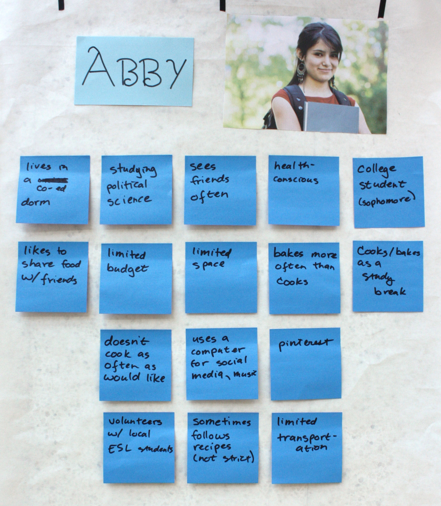
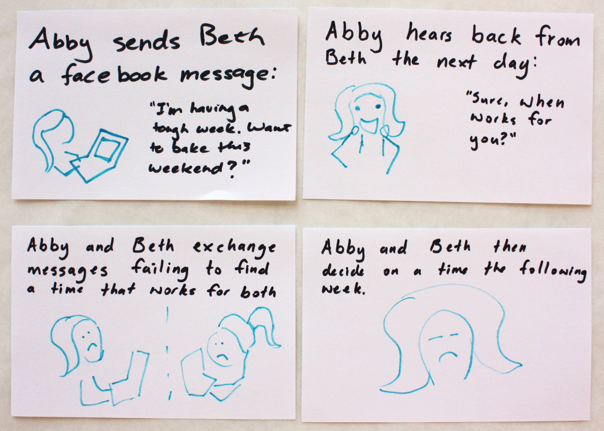
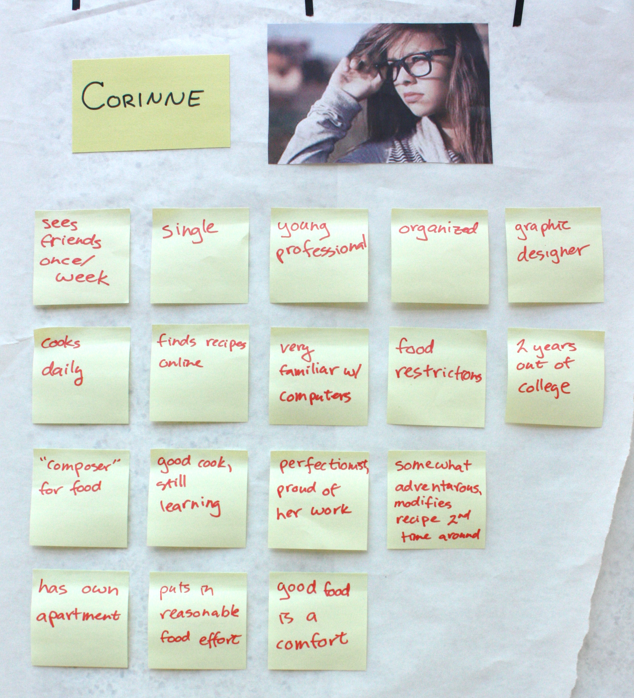

Our team conducted a series of user interviews in order to determine the needs, values, and goals of our potential users.
Before starting the interviews, we modified a release form provided by our professors which introduced our interviewees to our project idea and the interview process. We asked users if they were comfortable being interviewed, and whether or not we could take photos. We made it clear that they would remain anonymous, while at the same time, what we learn from them would become publicly available on our website.
Guided by our course readings and experiences from UOCD, we wrote a list of interview questions, grouped into several categories. Since we are interested in learning about how users cook socially, we asked questions about how they schedule meetings with friends, use technology (specifically the Internet), find and use recipes, plan meals, cook socially, and emotionally respond to cooking. We asked open-ended questions that encouraged users to expand upon their experiences and that would provide us with a thorough overview of their cooking and scheduling processes. We were curious to learn which aspects of the meal planning and scheduling process are particularly challenging, as well as which aspects of cooking users enjoy.
We relied upon our personal connections in order to interview a variety of people, including current Olin students, alumni, family acquaintances, professors, and members of local food sharing groups. Interviewees ranged in age from low-twenties to mid-fifties, and were a good balance of men and women. We interviewed a total of twelve users, both in person and over the phone, since some people live too far away to meet in person. We even observed one user cooking in the kitchen, and another user showed us her Google documents of recipes, favorite cooking blogs, calendar with meeting requests, and Pinterest images of meals she enjoyed cooking. We conducted two interviews in pairs, but given the time constraints, most of the interviews were conducted individually.
We identified the tasks our users perform that relate to our social cooking app and arranged them in the flowcharts shown above. These tasks involve the process users take to schedule a cooking event with friends, determine which recipes to follow, and obtain the necessary ingredients. We used colored stickers to label the tasks which pertain specifically to either Abby or Corinne, as well as numbered green stickers that rank the relative importance of the tasks.
Abby is a 19-year old sophomore at American University, studying political science. Her parents are from Honduras, so her food preferences are related to her heritage and her love of baked goods. Abby learned to cook with her mother, and her favorite activity was always baking Christmas cookies during the holiday season. When she arrived at college, Abby realized that baking reminded her of home, and it was a food-related activity she could do easily with non-perishable ingredients. She loves to share food that she bakes with her friends, and she often bakes with friends as a study break.
She wishes she had time to cook more often, but when she does have time she loves to experiment with variations on recipes. Abby does not have a car, so she is dependent on public transportation or walking to get to grocery stores or other off-campus locations. Because she does not have a job, Abby is on a limited budget and very conscious of ingredient costs. She also does not have much space to store ingredients, but her micro-fridge is always stocked with butter and eggs.
Abby lives in a co-ed dorm and sees her friends every day, either for classes or just to hang out. She is very health-conscious and tries to eat properly, despite her sweet tooth. Outside of her classes, Abby volunteers with ESL students at local high schools. She uses her computer mainly for class work and for social media. Abby particularly likes to spend time on her pinterest and facebook accounts, sharing her class work and baking efforts with her friends. She is a very social person and sometimes feels down after spending long periods of time working by herself on classwork.
We wrote two task scenarios for Abby which motivate our social cooking app. These scenarios illustrate the difficult experiences encountered by Abby when she attempts to bake with her friends in college.
In the first scenario, Abby decides what to bake based on the ingredients she has already, since obtaining ingredients is difficult for her due to limited transportation. In the second scenario, Abby tries unsuccessfully to schedule a time when she and her friend Beth can bake together.
Corinne is a single 25-year old from the suburbs of Providence, RI. She graduated from the Rhode Island School of Design two years ago with a bachelor’s degree in graphic design. After graduation, she started working for a small start-up outside of Providence, doing graphic design for their marketing materials.
She is a highly organized perfectionist, and this is expressed every day in her work. Corinne enjoys being social but is very busy with her job, so she sees her friends approximately once a week and mostly on the weekends. Corinne has her own small apartment with a kitchen that is cozy but large enough to accommodate another person working with her.
She is a good cook, but is still learning, and she enjoys experimenting with new techniques and recipes. Cooking is fun for Corinne, but when she gets home from work, she is tired and does not have time or energy to devote several hours to cooking dinner every night. Corinne finds most of her new recipes online through epicurious.com and allrecipes.com. The first time trying recipes, she usually follows them line by line, but she often experiments the second time around to suit the recipe more to her tastes.
Good food is a comfort to Corinne, and she considers herself a composer of food just as she is a designer of graphics. She does not cook with friends very often, but the main reason for that is the difficulty of scheduling times to cook and eat, particularly because her job sometimes keeps her in the office later than she expects. She wishes she could share her love of cooking (and the need to cook every night) with her friends on a more regular basis.
We wrote three task scenarios for Corinne which motivate our social cooking app. These scenarios illustrate the difficult experiences encountered by Corinne when she attempts to cook socially.
In her first scenario, Corinne must email back and forth to figure out which meal she would like to cook with her friend Dierdre. In addition, since Corinne has more freedom than Abby to choose recipes that require ingredients she does not have already, she must determine which ingredients she needs to buy or that her friends can bring. Finally, Corinne experiences the challenge of finding a time to cook that is free for both herself and her friend Dierdre.
| Joe Gibson | Molly Grossman | Mandy Korpusik | Colby Sato | |
| User Interviews | 20 | 20 | 30 | 30 |
| Persona Creation | 25 | 25 | 25 | 25 |
| Website Development | 75 | 20 | 2.5 | 2.5 |
| Task Analysis and Scenarios | 25 | 25 | 25 | 25 |
| Story Boards | 25 | 25 | 25 | 25 |